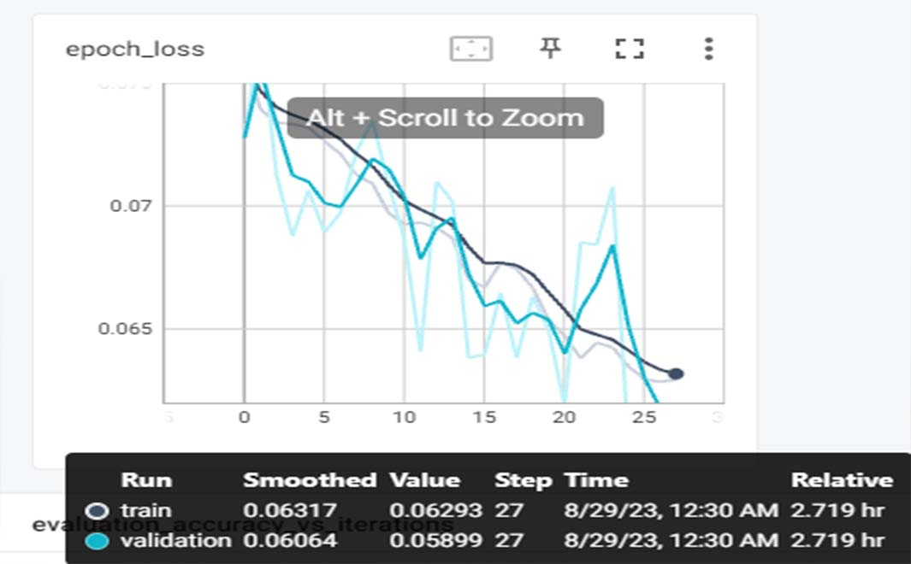
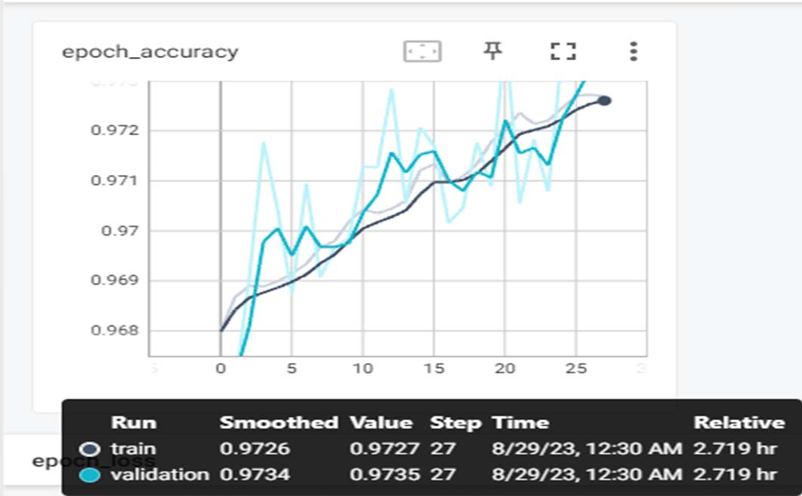

第一次尝试CV类型的模型搭建。目前转了一圈看下来，以我的能力暂定使用U-Net来作为这场比赛的模型。受限于水平，其他代码都直接用论坛中提供的《2D牙齿图像分割竞赛Baseline》代码。 模型尝试使用U-Net家族中的Res U-Net。
首先看一下比赛提供的TEST与TRAIN文件。我的模型在colab上训练，已经上传好了对应文件。
import zipfile # 解压缩测试文件
f = zipfile.ZipFile("/content/drive/MyDrive/STS/originfile/image.zip",'r') # 压缩文件位置
for file in f.namelist():
print(file)
f.extract(file,"/content/drive/MyDrive/STS/test") # 解压位置
f.close()
记得登录colab并从Google driver加载硬盘
– from google.colab import drive
– drive.mount('/content/drive')
导入对应的包
import os
import numpy as np
import random
import matplotlib.pyplot as plt
import tensorflow as tf
from tensorflow.keras import layers, models
from tensorflow.keras.applications import ResNet152
from tensorflow.keras.layers import Activation, BatchNormalization, Conv2D, MaxPooling2D, ZeroPadding2D
from tensorflow.keras.callbacks import TensorBoard
from tensorflow.keras.initializers import HeNormal, GlorotNormal
from tensorflow.keras.models import load_model
from PIL import Image
数据读取
trainimage_path='/content/drive/MyDrive/STS/train/train/image'
trainmask_path='/content/drive/MyDrive/STS/train/train/mask'
data_filenames = os.listdir(trainimage_path)
label_filenames = os.listdir(trainmask_path)
data_filenames.sort()
label_filenames.sort()
data = [os.path.join(trainimage_path, i) for i in data_filenames]
label = [os.path.join(trainmask_path, i) for i in label_filenames]
dataset = tf.data.Dataset.from_tensor_slices((data,label))
dataset = dataset.shuffle(buffer_size=len(dataset), seed=42)
tf.config.run_functions_eagerly(True)
def _parse_function(data, label, typee):
image_decoded = tf.io.read_file(data)
image_decoded = tf.image.decode_png(image_decoded, channels=3)
image = tf.image.convert_image_dtype(image_decoded, tf.float32)
mask_decoded = tf.io.read_file(label)
mask_decoded = tf.image.decode_png(mask_decoded, channels=1)
mask = tf.image.convert_image_dtype(mask_decoded, tf.float32)
def data_augmentation(image, mask):
# 把图像尺寸放大
new_height = tf.cast(tf.cast(tf.shape(image)[0], tf.float32) * 1.15, tf.int32)
new_width = tf.cast(tf.cast(tf.shape(image)[1], tf.float32) * 1.15, tf.int32)
image = tf.image.resize(image, [new_height, new_width], method=tf.image.ResizeMethod.BILINEAR)
mask = tf.image.resize(mask, [new_height, new_width], method=tf.image.ResizeMethod.NEAREST_NEIGHBOR)
combineddata = tf.concat([image, mask], axis=-1)
combined_shape = tf.shape(combineddata)
combineddata = tf.image.random_flip_left_right(combineddata)
combineddata = tf.image.random_crop(combineddata, [320, 640, combined_shape[-1]])
image = combineddata[..., :-1] # 去除最后一个通道，得到图像
mask = combineddata[..., -1:]
return image, mask
if typee == "train":
image, mask = data_augmentation(image, mask)
return image, mask
BATCH_SIZE = 8
train_dataset = dataset.map(lambda data, label: _parse_function(data, label, typee = "train"))
train_dataset = train_dataset.batch(BATCH_SIZE)
train_dataset = train_dataset.prefetch(tf.data.experimental.AUTOTUNE)
val_dataset = dataset.map(lambda data, label: _parse_function(data, label, 0))
val_dataset = val_dataset.batch(BATCH_SIZE)
val_dataset = val_dataset.prefetch(tf.data.experimental.AUTOTUNE)
val_dataset = val_dataset.take(5)
train_dataset = train_dataset.skip(5)
定义模型 这里使用的模型是 ResNet152。由编码器（下采样器）和解码器（上采样器）组成。
def dice_loss(y_true, y_pred):
smooth = 1e-5 # 平滑因子，避免分母为0
intersection = tf.reduce_sum(y_true * y_pred)
union = tf.reduce_sum(y_true) + tf.reduce_sum(y_pred)
dice = (2. * intersection + smooth) / (union + smooth)
dice_loss = 1. - dice
return dice_loss
def binary_crossentropy_loss(y_true, y_pred):
return tf.keras.losses.binary_crossentropy(y_true, y_pred)
def total_loss(y_true, y_pred):
dice = dice_loss(y_true, y_pred)
bce = binary_crossentropy_loss(y_true, y_pred)
total_loss = 0.1 * bce + 0.9 * dice # 根据需求调整权重
return total_loss
# 定义保存权重的路径和文件名格式
checkpoint_dir = "/content/drive/MyDrive/STS/models"
checkpoint_path = os.path.join(checkpoint_dir, "loss-{loss:.4f}_accuracy-{accuracy:.4f}.h5")
# 创建保存每个 epoch 权重的回调函数
checkpoint_callback = tf.keras.callbacks.ModelCheckpoint(
filepath=checkpoint_path,
save_weights_only=True,
save_best_only=False,
save_freq='epoch',
verbose=1)
tensorboard_callback = TensorBoard(log_dir="./logs", update_freq='epoch', write_graph=True, write_images=True)
def unet_with_resnet(input_shape):
# 使用ResNet152作为编码器
resnet = ResNet152(input_shape=input_shape, include_top=False, weights='imagenet')
# 锁定ResNet的权重，这样在训练过程中只会更新U-Net的权重
resnet.trainable = False
# 获取ResNet的输出张量
resnet_output = resnet.output#(10,20)
# 解码器部分
up1 = layers.UpSampling2D(size=(2, 2), interpolation='bilinear')(resnet_output)#(20,40)
up1 = layers.Conv2D(512, 2, activation='relu', padding='same', kernel_initializer=HeNormal())(up1)#(20,40,512)提取特征通道
merge1 = layers.concatenate([resnet.layers[482].output, up1], axis=3)
conv6 = layers.Conv2D(512, 3, activation='relu', padding='same')(merge1)
conv6 = layers.Conv2D(512, 3, activation='relu', padding='same')(conv6)
conv6 = layers.Conv2D(512, 3, activation='relu', padding='same')(conv6)
conv6 = layers.Conv2D(512, 3, activation='relu', padding='same')(conv6)
conv6 = layers.Conv2D(512, 3, activation='relu', padding='same')(conv6)
up2 = layers.UpSampling2D(size=(2, 2))(conv6)
up2 = layers.Conv2D(256, 2, activation='relu', padding='same')(up2)
merge2 = layers.concatenate([resnet.layers[120].output, up2], axis=3)
conv7 = layers.Conv2D(256, 3, activation='relu', padding='same')(merge2)
conv7 = layers.Conv2D(256, 3, activation='relu', padding='same')(conv7)
conv7 = layers.Conv2D(256, 3, activation='relu', padding='same')(conv7)
conv7 = layers.Conv2D(256, 3, activation='relu', padding='same')(conv7)
up3 = layers.UpSampling2D(size=(2, 2))(conv7)
up3 = layers.Conv2D(128, 2, activation='relu', padding='same')(up3)
merge3 = layers.concatenate([resnet.layers[38].output, up3], axis=3)
conv8 = layers.Conv2D(128, 3, activation='relu', padding='same')(merge3)
conv8 = layers.Conv2D(128, 3, activation='relu', padding='same')(conv8)
conv8 = layers.Conv2D(128, 3, activation='relu', padding='same')(conv8)
up4 = layers.UpSampling2D(size=(2, 2))(conv8)
up4 = layers.Conv2D(64, 2, activation='relu', padding='same'
merge4 = layers.concatenate([resnet.layers[4].output, up4], axis=3)
conv9 = layers.Conv2D(64, 3, activation='relu', padding='same')(merge4)
conv9 = layers.Conv2D(64, 3, activation='relu', padding='same')(conv9)
up_final = layers.UpSampling2D(size=(2, 2), interpolation='bilinear')(conv9)
outputs = layers.Conv2D(1, 1, activation='sigmoid', padding='same', name='output')(up_final)
model = models.Model(inputs=resnet.input, outputs=outputs)
return model
input_shape = (320, 640, 3)
model = unet_with_resnet(input_shape)
adam_optimizer = tf.keras.optimizers.Adam()
model.compile(optimizer=adam_optimizer, loss=total_loss, metrics=["accuracy"])
model.load_weights("/content/drive/MyDrive/STS/models/1.0倍图训练 loss-0.0755_accuracy-0.9681.h5")
model.fit(train_dataset, validation_data=val_dataset, epochs=50, shuffle=True, callbacks=[checkpoint_callback,tensorboard_callback])
-
 -

先用原图对模型进行训练，训练loss达到0.07时对数据进行调整。放大为1.1倍图片继续用原图的权重进行迁移训练。最总loss到达0.06。